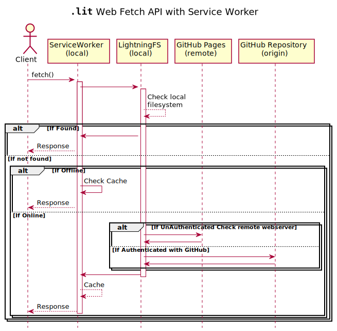

umlumlcollapse> img overview.svgtitle **"".lit""** Web Fetch API with Service Worker
hide footbox
actor Client as c
participant "ServiceWorker\n(local)" as sw
participant "LightningFS\n(local)" as fs
participant "GitHub Pages\n(remote)" as ghp
participant "GitHub Repository\n(origin)" as ghr
c -> sw : fetch()
activate sw
sw -> fs
activate fs
fs --> fs : Check local\nfilesystem
alt If Found
sw <- fs
c <-- sw : Response
else If not found
alt If Offline
sw -> sw : Check Cache
c <-- sw : Response
else If Online
alt If UnAuthenticated Check remote webserver
fs -> ghp
ghp -> fs
else If Authenticated with GitHub
fs -> ghr
ghr -> fs
end
fs -> sw --
sw --> sw : Cache
c <-- sw -- : Response
end
end
imgoverview.svgUpdated 53.4w ago